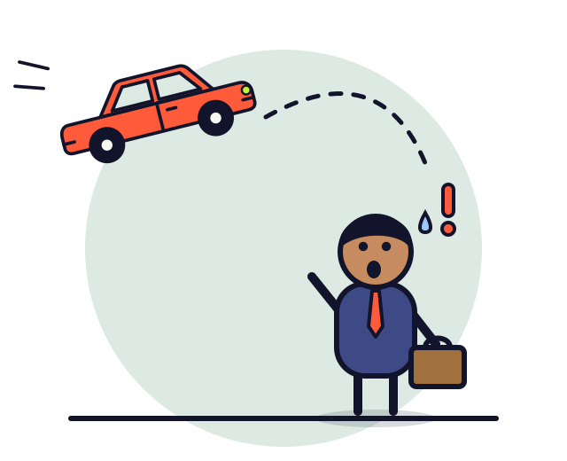
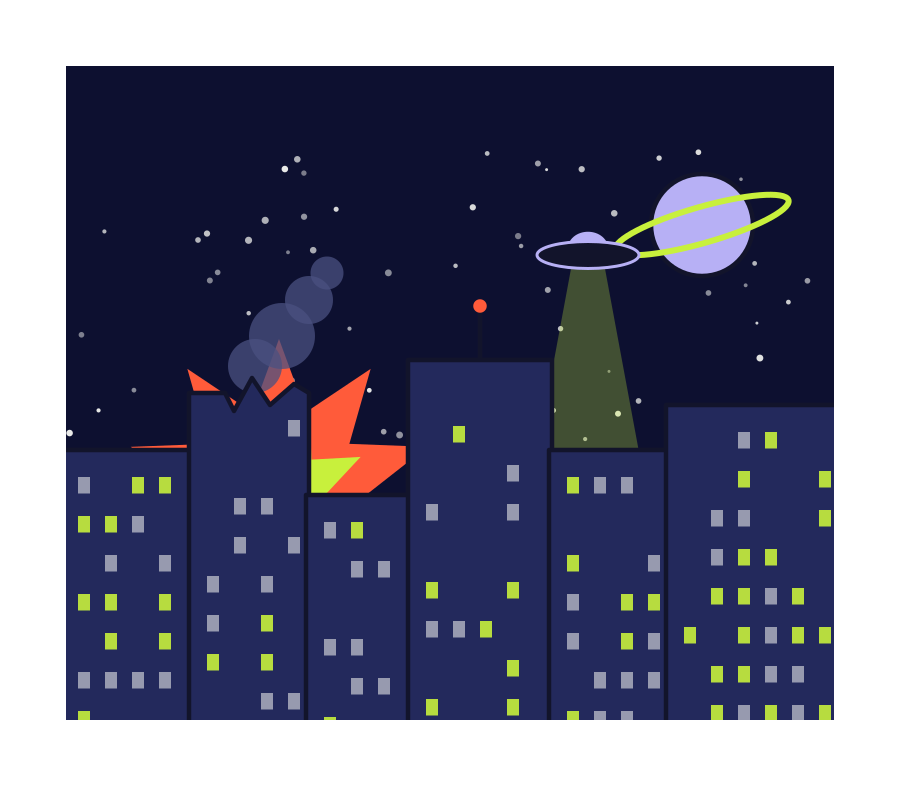
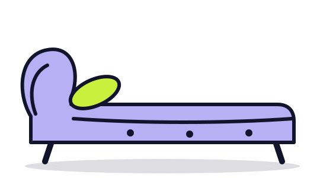
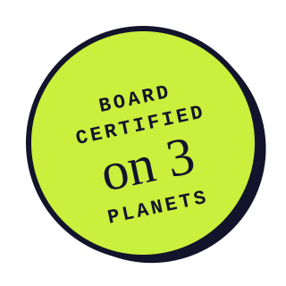
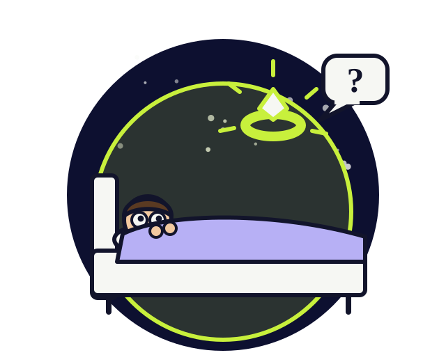
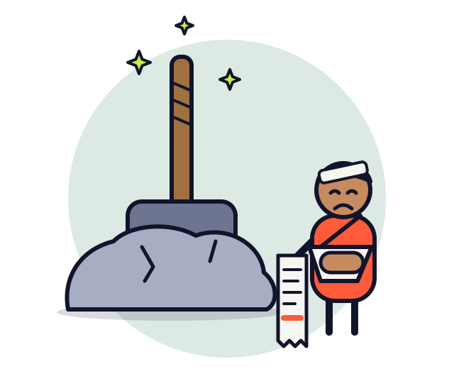
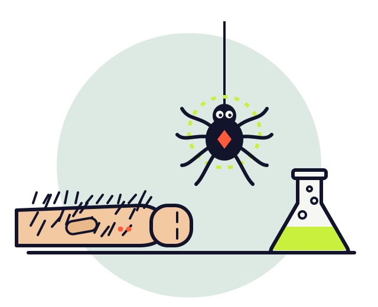
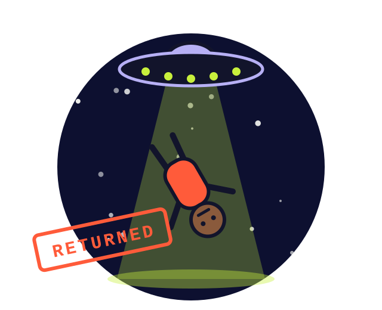
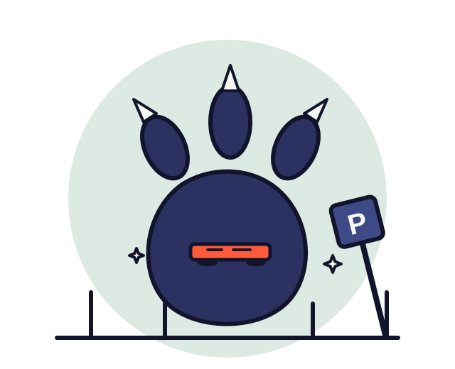
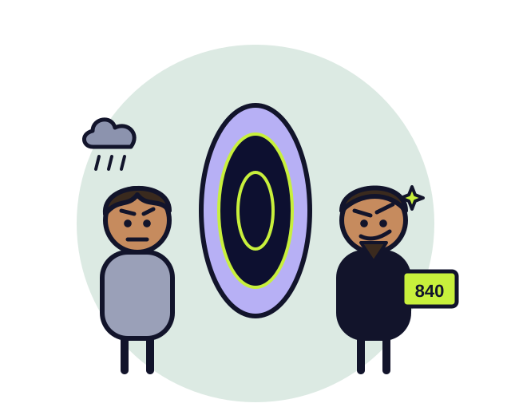

Vehicular Projectile Trauma
You were driving home from work. A very large, very green, very upset man borrowed your sedan to throw at someone. He missed. Your insurer called it "an act of rage."
PSYCHIATRY FOR THE COLLATERALLY DAMAGED
Board-certified care for bystanders, sidekicks, commuters and visiting life-forms recovering from superhuman, supernatural and extraterrestrial events. In person on Earth. Telehealth across most dimensions.



Metro Bystanders Union · Dept. of Unexplained Damages · Intergalactic Council, Sector 7 · Mercy General, Collateral Wing · Assoc. of Retired Henchmen
CONDITIONS WE TREAT
You're not overreacting. Something with a cape overreacted near you.

You were driving home from work. A very large, very green, very upset man borrowed your sedan to throw at someone. He missed. Your insurer called it "an act of rage."

3:12 a.m. A glowing ring floated into your bedroom, sealed you in a bubble of light and asked if you were afraid. You said yes. Loudly. It left. You have not slept since.

It was just lying there. You're a reasonable adult. You gave it a go. Now you have a dislocated shoulder, a $14,212 hospital bill and questions about whether you're worthy.

Same lab. Same field trip. Same breed of spider. He got reflexes, wall-climbing and a brand deal. You got significantly more body hair.

They beamed you up. They looked at you for eleven seconds. They beamed you back down and took your neighbor's cow instead.
You have lived this Tuesday 412 times. You know what the barista will say. The barista does not know you know.

A 300-foot lizard walked through your parking garage. Your car is now four inches tall and, technically, art.

A portal opened in your kitchen and out stepped you — with a goatee, better posture and a credit score of 840.
Bitten, zapped, chosen, cursed, cloned, shrunk, possessed, or just very confused — if it happened, we've heard worse. Yesterday.
THE PANIC METER
Three questions. No wrong answers. Some very wrong situations.
Not a real diagnosis. Dr. Mara will do the real one — gently, in person, with tissues.

0 of 3 answered. Finish all three to see your (unofficial) diagnosis.
HOW IT WORKS
A 15-minute intake call. Describe the incident in as much or as little detail as you like. We've heard worse. Today, probably.
Evidence-based therapy — CBT, EMDR, exposure work — adapted for events that weren't in the textbook. Yet.
Weekly sessions, in person or by telehealth. Stuck in a time loop? You're only billed once.
In person
Earth only. Reinforced building.
Telehealth
Most dimensions. Lag may vary.
Group sessions
Weeknights at 7. Snacks. See below.
Couples
For when one of you is secretly a hero.
For people who were just getting a sandwich.
Also Tuesday. Also Tuesday. Also Tuesday.
One of you per universe, please.
The cow attends. She's doing great.
Masks on. Feelings off the chest.
MEET YOUR PSYCHIATRIST
For fifteen years, Dr. Mara has treated the people in the background of someone else's origin story: the commuters, the night-shift nurses, the interns, the guy who was just getting a sandwich. She trained in emergency psychiatry, completed a fellowship in Disaster & Anomaly Medicine, and opened this practice after her office was destroyed for the third time in one fiscal year.
“Every hero gets an origin story. So does every bystander. Yours just comes with more paperwork.”
BILLING & INSURANCE
With Collateral Damage Billing, we send the invoice to whoever caused it. Current response rate: 4%. The other 96% fly away, which we note in your file as "avoidant."
Self-pay is $180 a session, or two units of any recognized galactic currency.
WE ALSO ACCEPT
FROM THE WAITING ROOM

“I used to flinch every time a car drove past. Now I only flinch at the airborne ones. Progress.”
“She didn't ask why I had six arms. She just moved the tissues closer.”
“412 Tuesdays. Session nine was the first one that felt different.”
“I still can't lift it. I've made peace with that. Mostly.”
Stories shared with permission. Names changed. Planets not.
THE CASE FILES · NOTES FROM THE PRACTICE

CASE FILE #0412 · TEMPORAL
On loops, baristas, and why session nine was the first one that mattered.
6 min read · or one Tuesdayread it now
CASE FILE #0027 · PAPERWORK
Form 27-B, explained by someone who has filled it in eleven times.
4 min readread it now
CASE FILE #0088 · ETIQUETTE
Eleven seconds is longer than you think. Make them count. Bring a bag.
3 min readread it nowFREQUENTLY ASKED, NERVOUSLY
Yes, discreetly. Masks may stay on during sessions. Capes must be checked at reception — we have hangers.
We don't judge. We do have a separate waiting room, and we ask that the death ray stays in the car.
No. A man in a dark suit with a very bright pen might. We'll help with whatever's left.
Yes. When you book, tell us your preferred atmosphere, gravity and number of chairs.
Check your "Act of God" clause. Then check it again, now that it's literal.
Yes. You'll be charged once, and we take good notes — so next time round you can skip the intake.
Then you're the one we bill. But yes — come in. Anger is a feeling too, and the parking garage has a weight limit.
We validate everything. Parking included, if the garage is still there.
New patients from every planet welcome. Most appointments within the week (local time).